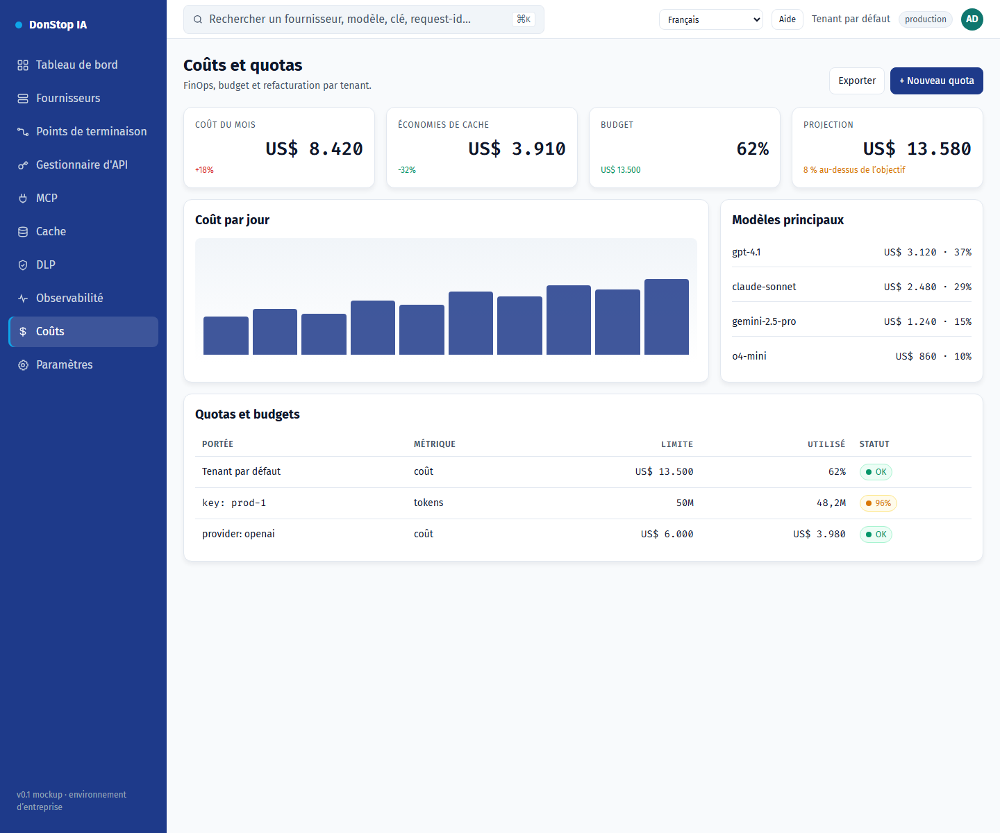

Coûts

Ce que fait cet écran
Affiche les coûts journaliers et mensuels, la projection, le budget et les quotas par tenant, clé et fournisseur.
Quand l’utiliser
Utilisez cet écran pour inspecter, configurer ou exploiter cette partie de la passerelle.
Étape par étape
- Ouvrez Coûts depuis la barre latérale.
- Vérifiez les indicateurs et le tableau principal.
- Utilisez les actions décrites ci-dessous ; les changements s’appliquent immédiatement.
- Définissez quotas et budgets, puis exportez le rapport de refacturation.
Champs et actions
| Champ ou action | Libellé ou action visible sur cet écran. |
|---|---|
| Coût aujourd'hui | Libellé ou action visible sur cet écran. |
| Coût du mois | Libellé ou action visible sur cet écran. |
| Projection | Libellé ou action visible sur cet écran. |
| Budget | Libellé ou action visible sur cet écran. |
| Quotas et budgets | Libellé ou action visible sur cet écran. |
Erreurs et états courants
- Si les données ne se chargent pas, réessayez. Si le problème persiste, vérifiez la passerelle et les fournisseurs.
- Si une action est désactivée, confirmez votre rôle et le périmètre du tenant.
- Les états vides sont normaux avant la première requête ; suivez l’appel à l’action.
Guides associés
Capture d’écran de Coûts en Français.